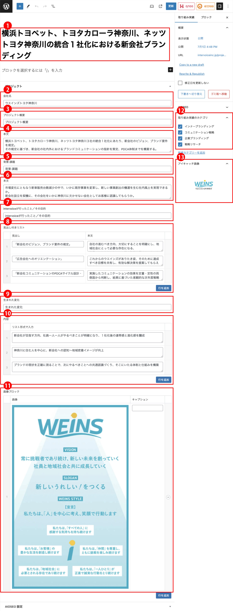
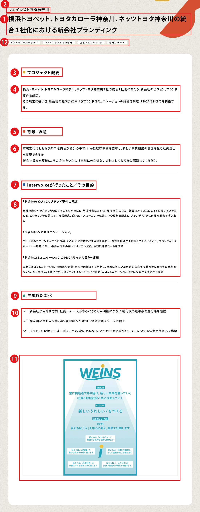

intervoice
【取り組み実績】WordPress更新マニュアル
2024.7.8 更新
メニュー
取り組み実績を追加する
- 画面上部の「新規投稿を追加」をクリックします。
- ▼「取り組み実績」新規登録画面


- タイトル*（必須）
記事のタイトルを入力します。
- 会社名*（必須）
記事のタイトルを入力します。
- プロジェクト概要（見出し）
見出しを入力します。初期値として「プロジェクト概要」が入力されています。
- プロジェクト概要（本文）
本文を入力します。
- 背景·課題（見出し）
見出しを入力します。初期値として「背景·課題」が入力されています。
- 背景·課題（本文）
本文を入力します。
- intervoiceが行ったこと／その目的（見出し）
見出しを入力します。初期値として「intervoiceが行ったこと／その目的」が入力されています。
- intervoiceが行ったこと／その目的（見出し付きリスト）
見出し付きのリストを制作します。
「見出し」「本文」に入力してください
青ボタン「行を追加」クリックで、行数を増やすことができます。
増やした行は、マウスドラックで順番の入れ替えが可能。
丸マイナスアイコンで行を削除できます。
- 生まれた変化（見出し）
見出しを入力します。初期値として「生まれた変化」が入力されています。
- 生まれた変化（内容）
リスト形式で入力で、１文ごとに入力可能です。
青ボタン「行を追加」クリックで、行数を増やすことができます。
増やした行は、マウスドラックで順番の入れ替えが可能。
丸マイナスアイコンで行を削除できます。
- 画像ブロック
「画像」「キャプション」を入力できます。
青ボタン「行を追加」クリックで、行数を増やすことができます。
増やした行は、マウスドラックで順番の入れ替えが可能。
丸マイナスアイコンで行を削除できます。
- カテゴリ
取り組み実績の分類（カテゴリ）を選択してください。
複数選択することができます。
- アイキャッチ画像*（必須）
「アイキャッチ画像を設定」を選択し、画像を設定します。
一覧画面で表示されるサムネイル画像になります。
OGP画像としても流用されます。
- 公開*（必須）
青い「公開」ボタンを押してください。記事が公開されます。
公開日時が新しいものから順番にHP上に並びます。
- 公開した「取り組み実績」を編集・削除する
※編集方法はこちら